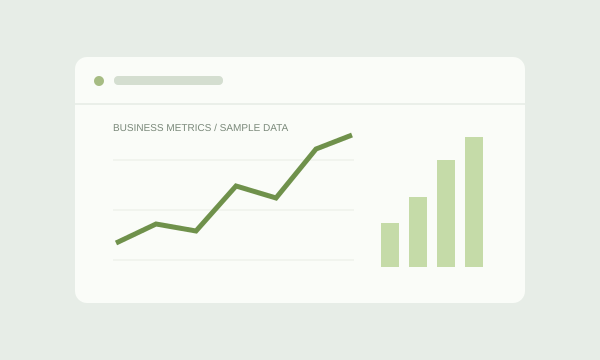

Concept previewBusiness intelligence Academic project
InsightBot
Make the data useful.
An AI-powered web application that turns provided data into business metrics, charts, and statistical analysis.
Explore project
Spring 2026 · Academic project
The question
How can business data become easier to understand and act on?
The approach
Built an AI-powered web application to generate business metrics, graphs, charts, and statistical analysis from supplied data.
Context & evidence
Academic work for BUSI 654: AI in Business at University Canada West.
Demonstrates the connection between data analysis, visual communication, and business questions.